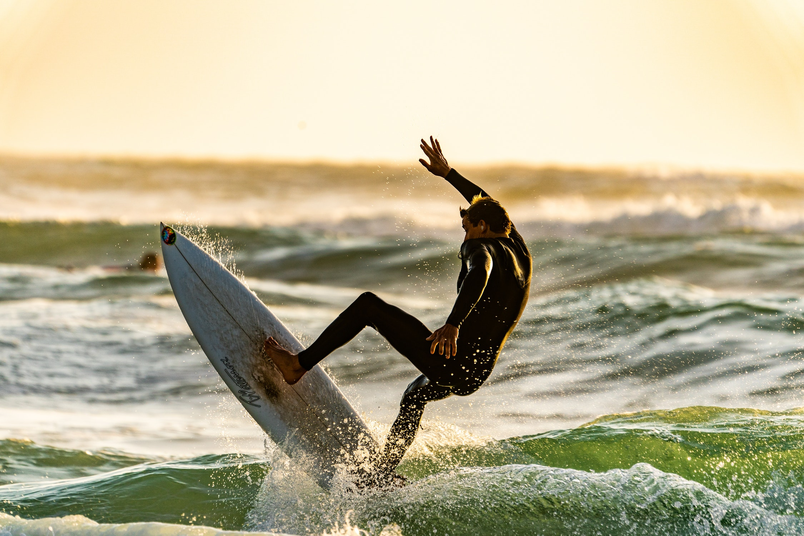
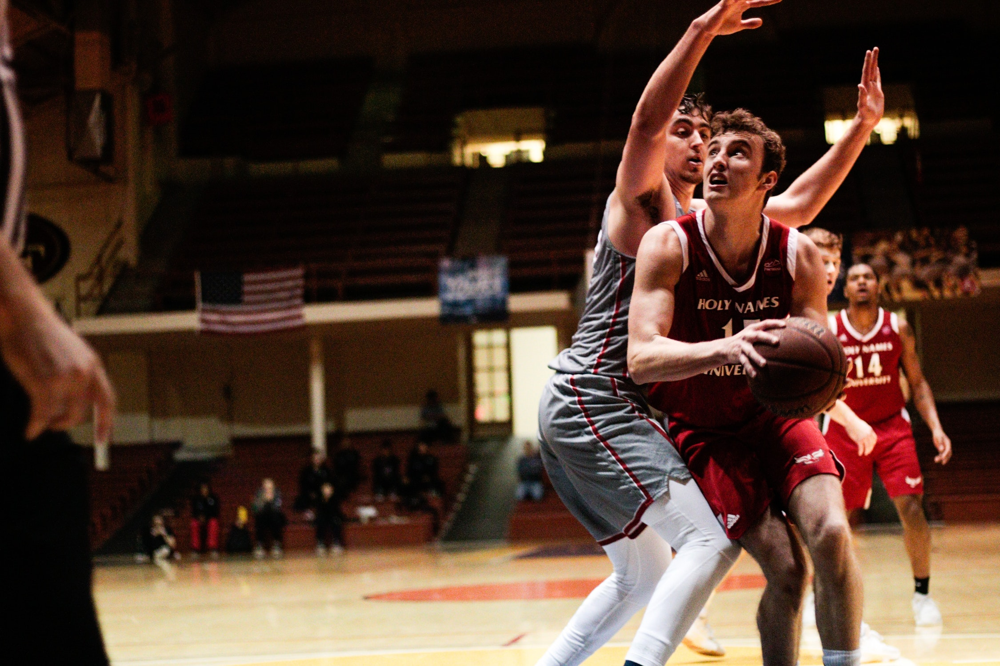
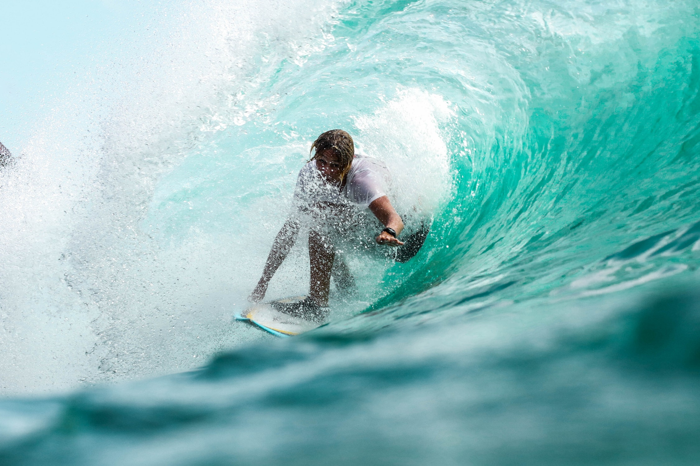
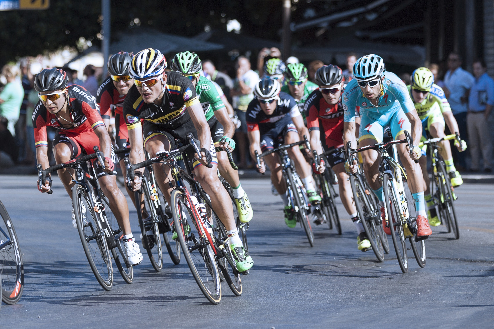
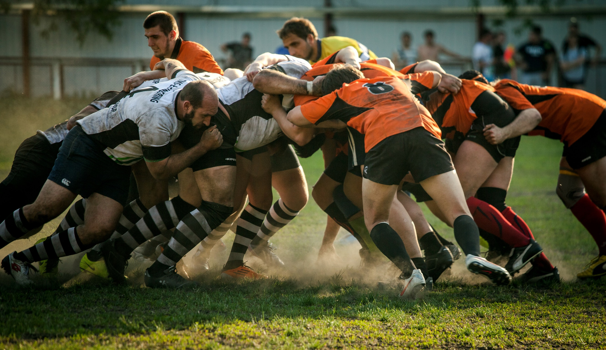
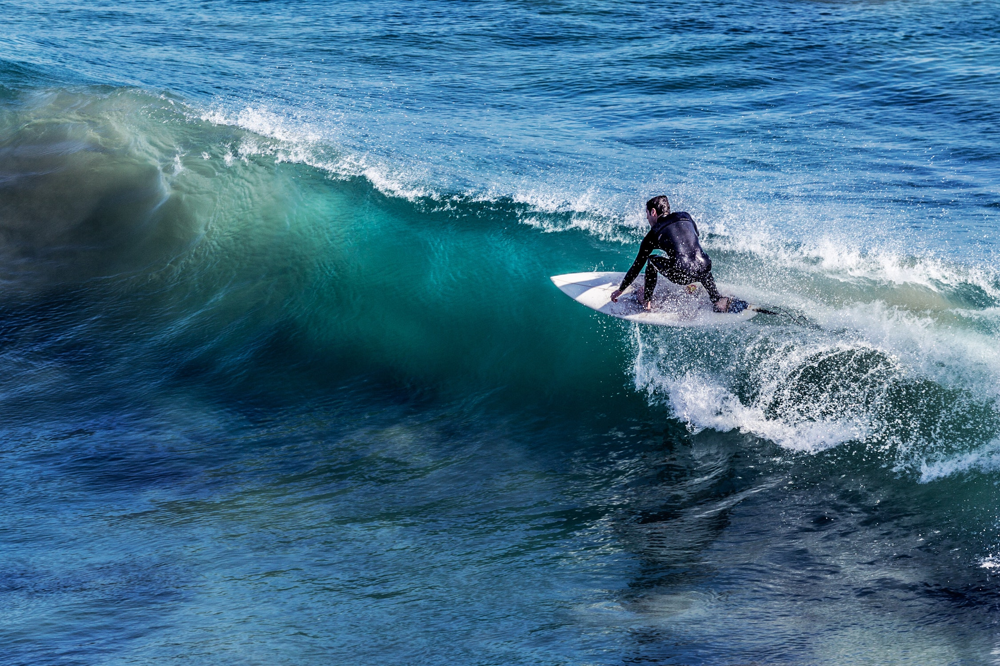

Activities
Sports shooting can be one of the most daunting types of photography, even to the advanced shooter. Examples of sports with bad lighting are ice hockey, basketball, indoor volleyball and anything at night; artificial light just isn’t as good as our trusty old sun. Before I start talking about lenses and aperture, I’d like to stress that fast shutter speeds are crucial to getting clear action shots.





